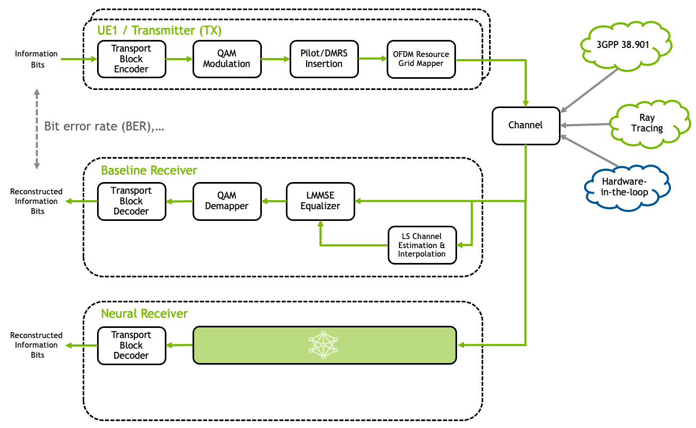

5G NR PUSCH Neural Receiver#
{kind=link}

Fig. 24 Schematic overview of the Neural Receiver replacing the conventional receiver chain.#
This tutorial demonstrates the integration of a neural receiver [Wiesmayr2024] for the 5G NR Physical Uplink Shared Channel (PUSCH) into the Sionna Research Kit (see also [Cammerer2023] for related work on neural receivers for multi-user MIMO). The core idea is to replace the conventional physical layer receiver signal processing - specifically channel estimation, equalization, and demapping—with a single neural network. Unlike classical receivers, this architecture operates on an entire 5G NR slot, jointly processing the full OFDM time-frequency resource grid to reconstruct the transmitted bits. For comprehensive background on neural receivers, please refer to the Sionna Neural Receiver Tutorial.
The architecture is designed to be robust and universal, capable of handling a wide range of channel conditions without overfitting to specific realizations. A key focus is real-time inference capability, targeting sub-1 ms inference latency (see [Wiesmayr2024] for details).
The source code of the neural receiver is available online. You can find more details on the NRX model architecture and training process in the Jumpstart Notebook.
Implementation Details#
The integration into the OAI stack follows similar concepts as the Integration of a Neural Demapper tutorial. Please refer to that tutorial for an introduction to TensorRT integration and memory management. The main difference here is that we replace more substantial parts of the PUSCH pipeline, which adds complexity to the implementation.
The neural receiver is integrated into the OpenAirInterface (OAI) stack via the OAI Shared Library Loader. The core logic resides in plugins/neural_receiver/src/runtime/trt_receiver.cpp.
We use TensorRT as the real-time inference engine. The TensorRT engine is built from the ONNX model using the Real-Time Receiver Notebook.
The following list summarizes the key implementation aspects:
Slot-Based Processing: Unlike the default OAI PUSCH processing which operates per OFDM symbol, the neural receiver overrides this behavior to process an entire slot at once. This mechanism is implemented in nr_ulsch_demodulation.c.
Fixed Input Dimensions: To avoid the latency penalties associated with dynamic shape reallocation in TensorRT, we fix the number of Physical Resource Blocks (PRBs) to 24. If the scheduled number of PRBs is smaller than the configured maximum, the input is padded. For more than 24 PRBs, the receiver operates on tiles of 24 PRBs.
Zero-Copy Memory: Data transfer between the CPU (OAI stack) and GPU (Neural Receiver) leverages unified memory to avoid memcopy bottlenecks. This is important for low-latency inference.
CUDA Acceleration: Custom CUDA kernels handle data pre-processing and post-processing to further minimize latency (e.g., converting input symbols to float16 and output LLRs to int16).
Single-User Processing: Though the neural receiver is designed to support multi-user MIMO, we limit this tutorial to single-user processing.
Note that for compatibility with the OAI shapes, we have slightly modified the tensor shapes in the neural receiver repository and, thus, checkout the srk branch of the neural receiver repository. This is not strictly necessary, but it simplifies the integration.
Note
The ONNX export pipeline in ext/neural_rx requires a separate Python environment with Sionna 0.18 and TensorFlow 2.15 (see ext/neural_rx/requirements.txt). Pre-exported ONNX and TensorRT plan files are provided in plugins/neural_receiver/models/; re-export is only needed if you retrain the model or change the PRB configuration.
Running the Neural Receiver#
To enable the neural receiver in the gNB, configure the shared library loader to use the _neural_rx version of the receiver plugin by updating the GNB_EXTRA_OPTIONS in the corresponding .env file:
GNB_EXTRA_OPTIONS="--loader.receiver.shlibversion _neural_rx --MACRLCs.[0].dl_max_mcs 10 --MACRLCs.[0].ul_max_mcs 10"
As our receiver implementation is limited to 16-QAM, we limit the uplink MCS such that only 16-QAM is used. An extension to other modulations is possible but requires careful interfacing with the OAI stack.
When the gNB starts, it will now automatically load libreceiver_neural_rx.so which runs the TensorRT engine.
Note
The default model is exported for 24 PRBs. We recommend to use a compatible gNB configuration. The provided config: GNB_CONFIG="../common/gnb.sa.band78.24prbs.conf" is compatible with the default model.
Alternatively, you can re-export the model for a different number of PRBs and re-compile the receiver plugin (MAX_BLOCK_LEN is currently hardcoded in the receiver plugin).
Start the system and wait for the gNB to start.
./scripts/start_system.sh rfsim
In the gNB log, you can now see the NRX statistics, e.g. the number of inferences per second, the number of PRBs processed per second, and the latency of the inference. Note that this requires traffic to be scheduled on the PUSCH, i.e., run iperf3 on the UE side.
You are now ready to design, train, and deploy your own neural receiver!
References#
R. Wiesmayr, S. Cammerer, F. Aït Aoudia, J. Hoydis, J. Zakrzewski, and A. Keller, “Design of a Standard-Compliant Real-Time Neural Receiver for 5G NR” in Proc. IEEE International Conference on Machine Learning for Communication and Networking (ICMLCN), pp. 1-6, 2025.
S. Cammerer et al., “A Neural Receiver for 5G NR Multi-user MIMO”, IEEE GC Wkshps, 2023.